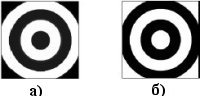

Что Лекция 1: Основы компьютерной графики
Что такое компьютерная графика
Когда-то очень давно у компьютеров вообще не было дисплея. Вся информация в те огромные ламповые монстры загружалась на бумажных носителях, называющихся перфолентами и перфокартами, результат выводился также на бумагу. Однако увеличение мощности компьютеров и сложности расчетов привели к необходимости разработки более удобного способа общения с машиной, в результате чего появился дисплей.
Долгое время дисплеи были текстовыми — ничего кроме цифр, а позднее букв, они не могли выводить. Однако уже тогда было понятно, что удобство работы требует большего — возможности вывода изображений. Именно момент появления дисплеев, которые могли выводить изображения, и можно считать моментом рождения компьютерной графики.
Первые опыты с компьютерной графикой были проведены в компьютерных играх, а затем она получила более широкое распространение.
Итак, что именно называют компьютерной графикой? В широком смысле слова компьютерная графика — это все, для отображения чего на мониторе используется визуальная, образная среда.
Однако это слишком абстрактное определение, поэтому сузим понятие до практического использования. Под компьютерной графикой мы будем понимать процесс создания, обработки и вывода изображений разного рода с помощью компьютера
История компьютерной графики с этой точки зрения началась намного позднее —в конце 1970-х — начале 1980-х годов.
Важную роль в этом процессе сыграл выпуск компанией Apple компьютеров Macintosh, которые в свое время произвели настоящую революцию по следующим причинам:
Macintosh серийно поставлялся с цветным монитором;
Операционная система этого компьютера обладала наглядным, визуальным интерфейсом (своего рода прообраз Windows);
Их мощности было достаточно для обработки компьютерной графики.
Именно поэтому Macintosh сразу заслужил внимание множества профессиональных художников и дизайнеров, которые поменяли карандаш и кисть на мышь и клавиатуру. Рынок программного обеспечения также не заставил себя долго ждать —появилось несколько достаточно функциональных для своего времени графических редакторов.
Сегодня человек, работающий в сфере полиграфии или web-дизайна, просто не может не владеть основными графическими пакетами. Даже художники оцифровывают свои работы и проводят дополнительную коррекцию на компьютере. Цифровая фотография уже вошла в жизнь миллионов людей и скоро станет популярнее классической.
История создания программы CorelDRAW, которой посвящен этот курс, начинается в 1985 году, когда доктор Майкл Каупланд основал компанию Corel, состоящую всего из нескольких человек.
Постепенно развиваясь, в 1992 году Corel выпускает первый графический редактор, оптимизированный для Windows 3.0 — CorelDRAW 3. Для своего времени это был мощный и универсальный пакет, позволивший малоизвестной до этого компании быстро завоевать рынок редакторов векторной графики (см. разд. 1.3).
Следующим важным шагом развития CorelDRAW стал выход в 1995 году шестой версии программы. Он практически совпал с выпуском Windows 95 и поэтому CorelDRAW 6 стал первым прикладным приложением, полностью оптимизированным для новой 32-разрядной операционной системы.
В 1996 году корпорация Corel предприняла активную атаку на вотчину своего главного конкурента, компанию Adobe, выпустив в продажу CorelDRAW 6 для компьютеров Apple Macintosh.
Однако несмотря на то, что эта акция была воспринята многими пользователями с восторгом, CorelDRAW до сих пор не смог ослабить позиции главного "маковского" векторного графического редактора Adobe Illustrator.
На сегодняшний день выпущена уже 12 версия CorelDRAW. Она продается в составе пакета Graphic Suite, который включает в себя также следующие программы:
Corel PHOTO-PAINT — второй по мощности после Adobe Photoshop редактор растровой графики;
Corel R.A.V.E — программа для создания несложных презентаций и Flash-анимаций;
Corel TRACE — программа для превращения растровой графики в векторную;
Corel CAPTURE — утилита для оптимизации работы с копиями экрана;
Bitstream Font Navigator — программа для управления шрифтами;
Corel Update — приложение для скачивания через Интернет обновлений для программ пакета Corel Graphic Suite.
Растровая графика
Первый вид компьютерной графики, с которым мы познакомимся, — растровая,или точечная. Пользователю легко понять сущность этой графики. Вспомните свое детство, вы наверняка собирали различные мозаики. Чем больше было кусочков,тем подробнее получался рисунок, особенно если смотреть на него с расстояния.
Растровое изображение — это тоже своего рода мозаика. Только в данном случае вместо кусочков пластмассы — пикселы.
Пиксел
Пиксел (Pixel) — элементарная единица изображения в растровой графике, обычно имеющая квадратную форму. Размеры пиксела зависят от разрешения изображения (количества пикселов на единицу длины).
На рис. 1.1 показано растровое изображение и его увеличенный фрагмент. Отчетливо видны элементы квадратной формы, из которых складывается изображение.
Рис. 1.1. Растровое изображение складывается из пикселов, как стена из кирпичей
Учитывая эту специфику построения, растровая графика имеет следующие особенности:
растровое изображение всегда прямоугольной формы;
растровое изображение не столь гибко как векторное к изменению размера (масштабирование может заметно ухудшить качество);
растровый документ не может содержать объекты в разных цветовых режимах.
Разрешение
Разрешение (Resolution) — количество точек на единицу длины (дюйм, сантиметр). Один из основных параметров изображения. Чем он выше, тем качественнее изображение, но больше размер его файла. Обычно используется 72 пиксела на дюйм (так называемое экранное разрешение), но для получения качественного результата в полиграфии необходимо значительно больше.
Разрешение — это понятие, практически идентичное понятию "качество" для растровой графики. Посмотрите рис. 1.2.
Увеличение разрешения положительно сказывается на четкости изображения, его реалистичности. Однако стоит учитывать, что это должно быть настоящее разрешение фотографии, а не интерполированная копия (что такое интерполяция, читайте ниже).
Рис. 1.2. Изображение в высоком (а) и низком разрешениях (б)
Повышение качества за счет увеличения разрешения имеет обратную сторону медали — пропорциональное увеличение размеров файла.
Разрешение измеряется в пикселах на дюйм (стандарт) или сантиметр (встречается редко). В этом курсе разрешение всегда будет указано в пикселах на дюйм.
В табл. 1.1 указаны основные разрешения и сферы их применения.
Интерполяция
Интерполяция — это математический способ увеличения количества пикселов в растровом изображении, который используется в графических пакетах.
Постарайтесь не путать понятия -масштабированиe и изменение размеров;
Масштабирование (чаще всего оно связано с инструментом Zoom (Масштаб)) —это изменение отображения на экране. Изменение размеров — это внесение изменений в графический файл. Посмотрите на рис. 1.3.
Рис. 1.3. Масштабирование изображения из четырех пикселов в два раза (а)и интерполяционное увеличение (б)
В первом случае (см. рис. 1.3, а) количество пикселов не изменилось, а размер картинки увеличился за счет увеличения количества точек, отводимых под отображение одного пиксела.
Во втором случае (см. рис. 1.3, б) кроме четырех исходных пикселов, появилось еще 12 интерполяционных, которые дорисовал компьютер.
Основные форматы растровых файлов
Несмотря на то что в основе растровой графики лежит одна и та же матрица пикселов, форматов для записи растровых файлов существует достаточно много. Рассмотрим некоторые из них, которые наиболее часто используются в работе.
CPT (Corel Photo-Paint Image)
Стандартный формат для хранения растровых изображений программы Corel PHOTO-PAINT и CorelDRAW. Способен сохранять все, что возможно создать в этих программах при работе с точечной графикой. Основной недостаток — плохая поддержка другими редакторами, например, Photoshop. Однако если вы отдаете предпочтение продуктам компании Corel, формат CPT — это достаточно оптимальный выбор.
PSD (Photoshop Document)
Собственный формат Photoshop. Основное достоинство — позволяет сохранять все, что можно создать в данной программе (слои, дополнительные каналы, комментарии, пути). Это полезное свойство, так как часто работа над одним изображением ведется в течение нескольких дней, и если бы не было таких возможностей в формате PSD, возник бы целый ряд проблем.
В настоящее время данный формат поддерживают практически все программы редактирования растровой графики.
В PSD используется стандарт компрессии RLE, что делает его размеры несколько меньше без потери качества.
BMP (Windows Device Independent Bitmap)
Собственный формат операционной системы Windows. Специально для нее разработан программистами компании Microsoft. Поддерживает индексированный (256 цветов) и RGB-цвет. Данный формат понимают абсолютно все (графические и не только) редакторы, работающие в Windows.
На этом немногочисленные достоинства BMP заканчиваются и начинаются многочисленные недостатки:
не подходит для Интернета;
крайне неудачный выбор для последующей распечатки;
является аппаратно зависимым форматом;
некорректно использует RLE-сжатие;
занимает неоправданно много места на диске.
Использование BMP будет ошибкой в любом случае, за исключением дальнейшего использования в программах, которые не могут работать ни с какими другими форматами.
GIF (CompuServe Graphics Interchange Format)
Один из самых известных форматов файлов, на сегодняшний день в основном используется в Интернете.
GIF был разработан в 1987 году компанией CompuServe для скоростной передачи изображений по сетям. Первоначально это был формат, поддерживающий только 256 цветов. Однако вскоре была обнаружена скрытая возможность GIF — записывать в один файл несколько картинок и проигрывать их с определенной задержкой. GIF поддерживает прозрачность, причем прозрачными можно назначить несколько цветов.
В GIF используется LZW-компрессия, что в сочетании с индексированными цветами делает этот формат идеальным для хранения и передачи изображений с малым количеством цветов.
JPEG (Joint Photographic Experts Group)
JPEG — это не только графический формат, это один из самых распространенных в настоящее время технологий сжатия файлов.
Технология JPEG реализуется следующим образом: сначала изображение разбивается на блоки 8*8 пикселов. Затем записывается два типа информации — усредненная информация о блоке и информация о его деталях. Далее, в зависимости от выбранной степени сжатия, удаляется то или иное количество дополнительной информации. Чем меньше будет размер файла, тем хуже будет его качество.
PCX
Один из форматов, которые неплохи сами по себе, но вытесняются другими. PCXподдерживает RLE-компрессию (см. выше). Он поддерживает цветовые модели Bitmap, Grayscale, Indexed colors, RGB (см. гл. 8). Однако PCX не поддерживает цветовую модель CMYK, что на сегодняшний день не очень хорошо. Кроме того,этот формат не умеет сохранять дополнительные каналы. Таким образом, лучше не использовать этот формат. Его прекрасно заменит более распространенный TIFF (см. ниже)
PICT (Macintosh QuickDraw Picture Format)
Используется, в основном, на компьютерах Macintosh. Поддерживается всеми программами на этих компьютерах и даже служит стандартом буфера обмена. При сохранении в PICT вы можете использовать цветовые режимы Bitmap, Grayscale,Indexed colors, RGB, CMYK. В RGB-файле можно сохранить один альфа-канал,в остальных режимах — несколько.
PICT способен хранить векторную информацию, текст и звук.
Этот формат имеет достаточно неплохие возможности для сжатия при условии наличия больших областей одного цвета (RLE-компрессия).
PNG (Portable Network Graphics)
Третий кит (первые два — это JPEG и GIF), на котором держится графика в Интернете. Самый перспективный формат Всемирной сети. PNG — это достаточно молодой формат, специально разработанный в качестве замены для GIF.
PNG поддерживает любое количество цветов. Сжатие происходит по принципу,сходному с LZW, но несколько более совершенному, что дает неплохие результаты. PNG также поддерживает чересстрочную развертку, причем двойную — по горизонтали и вертикали одновременно.
Встроенная гамма-коррекция позволяет правильно отображать цвета на всех компьютерах, независимо от платформы.
Формат PNG заслуживает внимания тех, чьи работы предназначены для дальнейшего использование в Интернете.
RAW
Самый гибкий формат для обмена изображениями между компьютерами разных платформ. Можно сохранять изображения в любой цветовой модели, включая Lab и многоканальный, поддерживает альфа-каналы.
На сегодняшний день RAW переживает второе рождение, так как это основной формат для многих цифровых фотоаппаратов.
TIFF (Tagged Image File Format)
Самый распространенный на сегодняшний день растровый графический формат в издательском деле. Основные его достоинства:
аппаратно независим, поэтому многие специально используют его для переноса изображений с PC на Macintosh и наоборот;
очень надежный формат, практически все программы понимают его без проблем;
поддерживает все цветовые модели, включая CMYK и PANTONE;
может нести дополнительную информацию, например, о контурах или альфа-каналах;
поддерживает LZW-компрессию.
Формат TIFF — лучший выбор для тех, чьи работы предназначены для печати.
Векторная графика
Векторное представление изображения кардинально отличается от растрового.Его принцип состоит в том, что описываются только основные точки изображения, а все промежуточные достраиваются между ними по определенным математическим законам. Например, если необходимо нарисовать отрезок прямой, можно указать только координаты концов отрезка, а также сделать пометку о том, что соединяющая их линия — прямая. Для описания окружности достаточно задать ее центр, указать радиус и сделать пометку "окружность". Аналогичным образом кодируются цвет объекта, толщина линий и др. В таком виде информация хранится в файле, а когда необходимо отобразить графический элемент — на мониторе,бумаге или другом носителе, — устройство вывода автоматически построит элементы изображения в соответствии с инструкциями (рис. 1.4).

Рис. 1.4. Описание прямоугольника на языке PostScript (а) и его отображение на экране (б)
Кривые Безье
Для описания векторного графического объекта существует множество способов.Самый удобный и распространенный из них это так называемые "кривые Безье",разработанные в 1968 году французским инженером-математиком Пьером Безье для решения узкоспециальной задачи — простого описания криволинейных фигур для машин по обработке листового металла. Способ оказался настолько удачным, что очень скоро завоевал популярность далеко за пределами инженерной графики.
Вкратце его суть сводится к следующему. Любая геометрическая фигура разбивается на несколько относительно простых участков, которые называются сегментами. Каждый сегмент начинается и заканчивается особой якорной точкой. В файле явно описываются координаты якорных точек, а также первая и вторая производная выходящего из них сегмента. Для человека, далекого от математики, предыдущая фраза звучит загадочно, но на деле все очень просто и наглядно. На рис. 1.5 показан фрагмент кривой Безье.
Якорные точки — это маленькие белые квадратики (1), из которых выходят вспомогательные прямые отрезки (2). Эти отрезки называются направляющими линиями. Каждая направляющая заканчивается черной точкой — маркером (3), ее длина и направление соответствуют первой и второй производной. Однако сидеть с калькулятором в руках и вспоминать курс дифференциального исчисления вам не придется. Если вы захотите изменить форму сегмента, достаточно потянуть за маркер соответствующей направляющей.
Рис. 1.5. Фрагмент кривой Безье
Растрирование и векторизация
ВНИМАНИЕ.Практически невозможно получить точно такое же растровое изображение из векторного элемента без потери качества, и наоборот. Поэтому к изменению вида графики для изображения нужно подходить осторожно.
Основные векторные форматы
Первым популярным форматом для представления векторной графики следует считать HPGL, разработанный компанией Hewlett-Packard для семейства своих плоттеров. Плоттер (графопостроитель) — это устройство для нанесения изображения на бумагу. Его перо в каждый заданный момент может двигаться только по прямой, поэтому объекты в HPGL разбивались на отрезки и в таком виде записывались в файл. Способ оказался весьма простым и эффективным, хотя и громоздким. HPGL в измененном и усложненном виде существует и в настоящий момент.
Однако сегодня наибольшее распространение получили другие, более совершенные форматы представления векторной графики.
Каждый уважающий себя разработчик программы векторной графики считает своим долгом создать собственный формат представления данных. Хотя в основе каждого из них лежит все та же идея кривых Безье, конкретные варианты могут настолько отличаться друг от друга, что сейчас достаточно остро встает проблема совместимости форматов.
CDR (CorelDRAW)
Основной формат программы CorelDRAW. Способен хранить не только элементы векторной графики, но и точечные изображения, текст, эффекты и многое другое.
Если вы хотите добиться максимальной совместимости файлов в формате CDR с другими программами (например, с программами для верстки), сохраняйте работы в формате более ранних версий программы, допустим, восьмой.
Adobe PostScript
В настольных издательских системах фактически является стандартом отрасли.Первоначально он был разработан как язык представления страницы для высококачественных выводных устройств (лазерных принтеров и фотонаборных автоматов), но сегодня широко применяется и в программах верстки, и в графических пакетах. Использует как векторный, так и растровый способы записи информации.
Последняя версия языка PostScript (Level 3) позволяет работать с такими сложными эффектами, как прозрачность, печать уровня Hi-Fi (в том числе Pantone Hexochrome), поддерживает 4096 градаций каждого цвета и т. д.
Существует несколько разновидностей PostScript, самый известный из которых —EPS (Encapsulated PostScript). Другой, бурно развивающийся сегодня вариант языка, — PDF (Adobe Portable Document Format) — формат программы Adobe Acrobat.
По сути, он представляет собой упрощенную и оптимизированную версию PostScript.Документ Adobe Illustrator также является PostScript-файлом.
DXF (Drawing eXchange Format)
Предназначен для использования в системах автоматизированного проектирования, прежде всего AutoCAD. В DXF реализованы многие возможности, отсутствующие в большинстве других форматов, например, хранение трехмерных объектов.
WMF (Windows MetaFile)
Изначально был создан для обмена данными между Windows-приложениями.Вполне подходит для использования в программах офисного уровня, но слишком примитивен для того, чтобы применяться в настольных издательских системах.
Более функциональный вариант WMF, который появился вместе с Windows 95 и называется EMF (Enhanced MetaFile), так и не получил широкого распространения.
PICT
Аналог формата WMF для платформы Macintosh. Имеет все те же недостатки, что и его аналог в Windows, умноженные на малую распространенность компьютеров Apple.
Введение в графический дизайн
Основы
В данном разделе мы поговорим о дизайне. Не об умении рисовать или составлять композиции — для этого достаточно наличия таланта и вкуса. И тем более мы не коснемся специфики работы ни в одном графическом пакете (хотя многие пользователи, немного изучив CorelDRAW, уже называют себя дизайнерами).
Поговорим о дизайне как о науке. Причем о науке точной, с четко сформированными правилами и аксиомами, заблуждениями поколений и откровением единиц.
Вы не станете дизайнером, только прочитав эту лекцию. Однако мы надеемся, что вы поймете главное: если что-то сделано хорошо, оно сделано хорошо по объективным причинам, и уже другой вопрос, благодаря чему пришел к этому создатель работы — своему таланту или теоретическим знаниям.
Мы хотим, чтобы читатель понял: стать дизайнером можно и не имея художественного таланта, но для этого нужно четко понимать определенные правила, по которым человек знает "что такое хорошо и что такое плохо"
Мы будем говорить о таких понятиях, как размер, форма, цвет, текстура, размещение и шрифт, композиция.
Попробуем сформулировать, чем может быть обоснован выбор и, особенно, отказ от выбора. Вы поймете, что часто вариантов не так мало, удачных же из них — единицы.
Также мы попытаемся описать основные ошибки, которые делают начинающие дизайнеры, и заблуждения, которые есть у большинства их старших коллег.
Размер
Однако размер — понятие относительное. Мы воспринимаем его не как 20 см, 3 м,5 км, а как "миниатюрный", "средний", "большой", "огромный", "колоссальный".
Все основано на ощущениях, которые испытывает человек, а человеческое восприятие очень гибко.
Когда мы рассматриваем миниатюру на брошке, наши понятия о большом и маленьком будут совсем другие, чем когда мы будем смотреть на огромную картину.
Подбирая размер конкретного объекта в составе работы, нужно думать о том, что в целом композиция несет некую идею (вообще, основная задача современного дизайна — максимально эффективно донести информацию или эмоции до потребителя). Поэтому, например, в рекламе сотового телефона нужно выделить именно сотовый телефон.
СОВЕТ.Обратить внимание на какой-то объект в композиции можно, не только сделав его размер больше, чем других, но и наоборот: привлечь внимание зрителя к небольшой детали, резко контрастирующей с крупными деталями остальных. В этом случае именно она будет восприниматься как главная информация, а все остальное — как фон. Этот эффект показан на рис. 1.6, на котором мы обратили внимание зрителей на одну из цифр.
Рис. 1.6. Выделить объект в композиции можно не только крупными размерами,но и наоборот
Именно поэтому объект, хорошо "работающий" в одной композиции, иногда не смотрится в другой композиции без "подгонки" размеров. Причем, "подгоняя" размеры, нужно доверять не только глазам (профессионалы знают, как обманчива информация, получаемая зрением), но и своим знаниям о влиянии формы, текстуры и цвета на восприятие размера.
Форма и размер
Восприятие размера зависит от формы объекта. Это связано с особенностью восприятия интерференции света глазами. На практике в основном приходится сталкиваться с тем, что объекты, имеющие сложное, особенно фрактальное строение,тяжело оцениваются с точки зрения размеров. Конечно, если они относительно велики и их детали сопоставимы с габаритами других объектов в композиции, такой проблемы не возникает. Однако чаще мелкие детали сложной формы вообще не воспринимаются как часть объекта, влияющая на его размер (рис. 1.7).
Данный пример подводит нас к ключевому понятию, определяющему отношение формы к восприятию размера. Это компактность, или плотность.
Иногда в литературе наиболее плотной фигурой называют круг. На наш взгляд,это не совсем верно. Мы бы определили компактность формы как отношение ее площади к незаполненным местам в зоне воображаемой границы. Сложно? Поясним на примере. Допустим, вам нужно разместить две фигуры — квадрат и круг —на двух носителях — монете и марке (рис. 1.8).
Рис. 1.7. Лучи этой фигуры не воспринимаются как границы объекта
Рис. 1.8. Размещение круглого и квадратного объекта a- на марке;б-на монете
Как видите, для марки более компактной фигурой является квадрат, для монеты —круг.
Об этой относительности восприятия следует помнить, так как именно компактность определяет восприятие размеров. Более плотная фигура выглядит всегда более крупной. Это также отлично видно на рис. 1.8 (особенно это касается марки).
На практике данное свойство используется следующим образом. Например, существует задача: нарисовать логотип компании с условным названием "AGGW" для использования на визитках.
Если вы хотите подчеркнуть важность этого элемента на карточке, привлечь к нему внимание, то стоит остановиться на компактной форме логотипа (рис. 1.9, а).
Если же логотип не должен отвлекать на себя внимание и призван скорее выполнять роль фона, то можно выбрать вариант, показанный на рис. 1.9, б. И это, обратите внимание, при равных размерах элемента на визитке.
Рис. 1.9.a. Форма логотипа: а — компактная;
Рис. 1.9.b. Форма логотипа: б — некомпактная
Текстура и размер
Применение текстуры дает возможность сделать новый эффект, изменить облик предмета, придать ему смысл. Текстура также может влиять на восприятие размеров объекта, и это нужно учитывать.
На рис. 1.10 изображены два квадрата одинакового размера. Однако несмотря на одинаковый размер, квадрат, у которого полосы идут горизонтально, выглядит значительно "тяжелее", крупнее по отношению к горизонтальной плоскости.Квадрат с вертикальными полосами выглядит выше.
Рис. 1.10. Направление светлых линий способно создать иллюзию удлинения в сторону их направленности
Этот эффект известен уже давно. Еще в старых журналах моды можно прочитать рекомендацию для полных женщин носить платья в вертикальную полоску — они создают впечатление более стройной фигуры, чем она есть на самом деле. На практике это явление используется достаточно часто. При необходимости придать объекту большую "устойчивость" используйте текстуры с ярко выраженной горизонтальной направленностью рисунка (например, текстуру кирпичной кладки).Если же, наоборот, необходимо избавиться от давящего размера, ориентируйтесь на вертикальное направление.
С текстурами связан еще один интересный эффект (рис. 1.11). Изображение на рис. 1.11, а словно удаляется от нас, второе (рис. 1.11, б), наоборот, кажется ближе. Этот эффект основан на свойстве белого цвета огибать все предметы, находящиеся на его фоне. Это необходимо знать и применять на практике при работе с радиальным градиентом.
Таким образом, текстура может также сыграть как положительную, так и отрицательную (при неправильном ее подборе) роль в отображении объекта.
Рис. 1.11. Эффекты, основанные на чередовании белых и черных радиальных полос:а — приближение; б — удаление
Цвет и размер
Влияние цвета на восприятие размера — наиболее сложный вопрос, касающийся размеров. Дело все в том же — в относительности восприятия. Зачастую мы склонны относить к более крупным объектам те, которые выделяются среди остальных,хотя объективных (то есть основанных на особенностях зрения) причин для этого нет.
Итак, первое и главное свойство: светлые объекты на темном фоне выглядят крупнее, чем темные на светлом фоне (рис. 1.12).
Рис. 1.12. Светлые объекты на темном фоне выглядят крупнее, чем темные на светлом фоне
Вы обязательно должны это учитывать, если хотите подчеркнуть симметричность каких-либо объектов, сильно отличающихся по яркости (например, в логотипе).Возможно, придется увеличить темный элемент для того, чтобы зрителю не показалось, что вы сделали свою работу не очень качественно.
На рис. 1.13 мы на 2% увеличили радиус темного круга по сравнению с белым —иначе логотип не выглядел бы таким, каким был задуман.
Рис. 1.13. Черный кружок сделан на 2% больше, чем белый, чтобы они выглядели одинаковыми
Точно так же ярко-красный элемент будет казаться несколько крупнее аналогичного темно-синего. Это нужно учитывать в работе.
Цвет
Мы живем в цветном мире. Каждый день, даже не выходя из дома, человек видит огромное количество оттенков. Мы привыкли к этому и не задумываемся ни о природе цвета, ни о том, какое влияние он имеет на нас и наше поведение. Хотя,может быть, это не совсем верно: любая женщина точно знает, для какого случая необходимо ярко-красное платье, а для какого подойдет и серый костюм.
Мы живем в плену цветов. Наши мысли, наши эмоции — все это имеет свой цвет.Достаточно вспомнить такие выражения, как "черные мысли", "зеленая тоска","оранжевое настроение", чтобы понять: психологическое восприятие предмета связано с его окраской, причем связано достаточно жестко.
В повседневной жизни это не имеет большого значения. Однако при использовании цвета в компьютерной графике необходимо четко чувствовать разницу не только в цветах, но и в тончайших оттенках, понимать, как их применение будет влиять на восприятие зрителем работы.
Правильно подобранные цвета могут как привлечь внимание к желаемому изображению, так и оттолкнуть от него. Вы можете вызвать радость, интерес, тоску,страх, скуку всего лишь изменением окраски.
Существует очень большое количество оттенков, однако у каждого человека есть свои любимые, выбор которых связан, как утверждают психологи, с особенностями каждой отдельной личности. Поэтому при выборе цветовой гаммы нужно опираться в том числе и на предполагаемый психологический портрет среднестатистического зрителя.
ВНИМАНИЕ.Дополнительная сложность возникает из-за того, что цвет как объективная физическая величина в природе не существует. Ощущение цвета, хотя и формируется под влиянием объективных факторов электромагнитного излучения (длина волны, интенсивность и т. д.), является субъективным. Более того, описание цвета в разных странах различается, что обусловлено национально-культурными традициями. Этим частично и объясняется то многообразие способов описания цвета, с которым приходится столкнуться любому человеку, профессионально работающему с компьютерной графикой.
Несмотря на то что цвет, в отличие от формы, понятие субъективное, существуют вполне универсальные законы его использования, которые дизайнер должен знать и применять на практике.
Сначала необходимо проанализировать, как устроен цвет. Вообще, это вопрос, достойный целой монографии по физике, поэтому мы не станем вдаваться в физиологические и спектральные особенности, а упростим понятия.
Для начала разложим цвет на составляющие. Из существующих цветовых моделей лишь модель HSV (Hue — Saturation — Value, тон — насыщенность — яркость) представляет его в привычном для нас виде и не требует привыкания.
Система HSV разлагается на три компонента:
тон — это непосредственно информация о цвете (это сложно объяснить, поэтому доверьтесь своей интуиции);
насыщенность — цвета, как вы знаете из обычной жизни, бывают более или менее насыщенными (обычно более насыщенный цвет называют сочным);
яркость — как легко догадаться, более яркий цвет воспринимается как более светлый.
Следует отметить, что не только различные люди реагируют на один и тот же цвет по-разному, но и целые народы. Это связано с традициями, в которых воспитывалась нация.
Например, в европейских странах белый — это цвет чистоты и невинности, а у некоторых восточных народов данный цвет является цветом траура.
Попробуем дать характеристику основным цветам. Схема деления цветов на холодные и теплые представлена на рис. 1.14. Это деление условно: чем ближе цвет к границам верхнего и нижнего полукругов, тем менее точно он относится к теплым или холодным.
Рис. 1.14. Цветовой круг, показывающий разделение цветов на холодные и теплые
Красный
У большинства людей красный цвет вызывает ассоциацию с огнем. Поэтому и действие данного цвета может быть разным — от ощущения тепла до страха. Он способен ускорять пульс и расширять зрачки, однако из-за своей яркости достаточно быстро утомляет, особенно если присутствует в больших количествах (например,если это цвет стен в помещении).
Чистый красный цвет — это цвет тревоги и возбуждения, однако его оттенки (коричневый, тепло-серый) действуют успокаивающе.
Красный привлекает к себе внимание (не случайно почти все предупреждающие надписи сделаны либо на красном фоне, либо красными буквами)
Этот цвет часто применяется в компьютерной графике, однако с ним нужно быть очень осторожными, чтобы не переусердствовать.
Красный цвет подходит для подчеркивания:
агрессивности, активности (например, лучшие спортивные машины, в частности Ferrari, выпускаются в основном красными);
страсти, сексуального желания. Это хорошо подтверждается тем, что в интерьере ночных клубов с эротической программой очень много красного;
жестокости (красный — цвет крови);
роскоши, богатства (особенно в сочетании с черным).
Желтый
Это самый яркий цвет на цветовом круге. Он идеально подходит для передачи радостного настроения, оптимизма. Именно поэтому желтый — один из наиболее часто используемых цветов в рекламе туристических компаний.
Кроме того, желтый цвет — это цвет золота. Поэтому у многих он ассоциируется с успехом, богатством и роскошью.
Оранжевый
Теплый, позитивный, яркий и современный цвет, оказывающий бодрящее влияние. Ускоряет пульс и расширяет зрачки. Один из наиболее часто используемых цветов в современном дизайне (особенно web-дизайне).
Оранжевый можно использовать, если вы хотите подчеркнуть:
современность. Многие компании, определяющие основной чертой своего бренда современность, выбирают оранжевый в качестве "фирменного" цвета.Особенно это распространено среди операторов сотовой связи;
динамичность
оптимизм. Для создания яркого плаката оранжевый фон — банальный, но практически идеальный вариант.
Как показывает опыт, оранжевый цвет очень хорошо смотрится в сочетании с голубым.
Зеленый
Удивительный цвет. Он может быть как теплым, так и холодным, однако чаще он находится на стыке, поэтому его можно отнести как к холодной, так и к теплой группе.
Зеленый оказывает успокаивающее воздействие, понижает давление, нормализует кровообращение. Это самый природный и самый "живой" цвет. Именно в этом и состоит его основное назначение в дизайне — передавать связь объекта с природой. На логотипах зеленый цвет встречается в основном либо у компаний, добывающих природные ресурсы, либо у экологических организаций.
Если вы смотрите современные приключенческие кинофильмы, то, наверное, обратили внимание, что биологическое оружие, инопланетная живность и прочая биологическая гадость чаще всего бывает зеленого (часто даже ярко-зеленого) цвета. Это также связано с подсознательными ассоциациями у людей.
Кроме того, зеленый цвет достаточно загадочный.
Зеленый подходит для передачи:
жизни во всех ее биологических проявлениях;
связи с природой;
загадочности
Голубой
Голубой цвет успокаивает и охлаждает. Подобный эффект объясняется ассоциациями с холодной водой и льдом. Порой вызывает чувство отчужденности.
Синий
Синий цвет находится в самом низу цветового круга и относится к холодной группе. Он успокаивает, навевая меланхоличное настроение.
Этот цвет можно отнести к цветам зоны "вечной мерзлоты": он идеально передает ощущение холода и чистоты. Действует успокаивающе, очень хорошо подходит для дизайна спален.
Варьирование насыщенности и яркости чисто синего цвета может дать большую гамму оттенков. Правда, из-зa особенностей системы CMYK (см. "Цвет и окрашивание объектов" ) именно синий хуже всего отображается при печати.
Используйте синий цвет, чтобы подчеркнуть:
покой
чистоту. Вы, может быть, обратили внимание на то, что упаковки почти всех современных чистящих средств имеют либо синий, либо голубой цвет. Это не случайно: ученые доказали, что именно эти цвета ассоциируются у большинства людей с чистотой;
устойчивость.
Фиолетовый
Рассматривая цветовой круг в направлении от красного цвета к синему, можно не заметить постепенного перехода через фиолетовый цвет. Это очень тяжелый для восприятия цвет, так как в природе он практически не встречается.
Фиолетовый, как синий и голубой, относится к холодной группе. Он способен создавать ощущение тесноты, ограниченности пространства, а также очень быстро утомлять и приводить к снижению активности.
Фиолетовый цвет является "неземным", ему присуща некая загадочность. Если вы смотрели представления иллюзионистов, то, наверное, обратили внимание на то, что в одежде, предметах, занавесе у них очень много этого цвета. Фиолетовый цвет способен вызывать у человека суеверный, подсознательный страх.
Итак, фиолетовый цвет подходит для:
создания мистического настроения;
подчеркивания загадочности.
Главные цвета: черный и белый
Вы, наверное, заметили, что мы рассмотрели основные цвета, но не затронули два особых цвета, которые присутствуют на цветовом круге, и в то же время их не видно, — это черный и белый.
Черный цвет — тяжелый цвет, несущий в себе тоску, горечь. Вызывает чувство усталости и дискомфорта. Несмотря на это, довольно часто люди выбирают одежду такого цвета. В данном случае он относится к классике, и при этом создается определенный стиль. Также этот цвет может сочетаться со всеми другими цветами в той или иной степени. Черный — это цвет роскоши, особенно в сочетании с красным. Славяне традиционно относят его к траурному цвету.
Белый — очень радостный цвет. Благодаря ассоциации с воздухом, вызывает чувство легкости, свободы и невесомости. Ускоряет пульсацию и расширяет зрачки.Белый довольно часто используют для создания фона. Сам по себе белый цвет не несет информации, а со всеми остальными цветами достаточно хорошо компонуется, создавая более светлые тона. Белый считается цветом невинности и чистоты.
Сочетаемость цветов
Вопрос сочетаемости цветов — один из самых спорных и неоднозначных в дизайне. Действительно, в данном случае как нигде силен принцип "о вкусах не спорят".Поэтому говорить об универсальных правилах, к сожалению, не приходится. Однако некоторые закономерности можно найти. Итак, первый и наиболее простой принцип — выбор близких оттенков. Точно так же, как одежда подбирается "в тон",могут быть подобраны и цвета, например для web-сайта.
Правда, такой подход достаточно примитивен и вряд ли подходит для профессиональной работы. Несколько интереснее использование цветового круга для поиска совместимых оттенков.
Посмотрите на рис. 1.15.
Рис. 1.15. Отношение цветов в цветовом круге
Использовать данный цветовой круг можно при помощи следующих правил:
смежные цвета неплохо совмещаются, выбор такого варианта обычно считается скучным и банальным;
цвета, которые находятся друг напротив друга, считаются малосовместимыми.Единственное исключение — синий неплохо смотрится в паре с желтым;
лучший выбор — цвета через один, те, которые на рис. 1.15 связаны прямыми.Они отлично сочетаются в большинстве своих оттенков, главное, чтобы не было большого контраста в яркости.
Черный и белый практически идеально сочетаются со всеми другими цветами,и, особенно, друг с другом. Поэтому, если есть выбор, всегда проще сделать работу именно в этих цветах.
Но все же главным ориентиром при подборе цветовой гаммы должен оставаться вкус(если повезло от рождения) и опыт (наработанный со временем). Ведь существует множество решений, которые не вписываются в рамки никаких цветовых теорий, однако являются примером качественной и талантливой дизайнерской работы.
Форма
Форма — это наиболее важная часть любого объекта. Можно опустить информацию о цвете, текстуре, размере, но помнить о форме необходимо всегда. Любая дизайнерская работа должна начинаться именно с выбора формы объекта или их "подгонки" друг под друга, если объектов несколько.
Дать определение слову "форма" достаточно сложно. Если утрировать, то это комплекс всех геометрических отношений объекта. Всего существует очень большое количество форм, поэтому их можно классифицировать только по строению. Формы бывают:
прямолинейные — такие фигуры построены из прямых линий. К ним относятся как привычные для нас прямая, треугольник, квадрат, звезда, так и более сложные фигуры (рис. 1.16, а);
криволинейные — это фигуры, основанные на сглаженных линиях (рис. 1.16, б).К ним относятся также круг, овал, дуга и некоторые другие;
аморфные — это нечеткие сложные формы (рис. 1.16, в). Аморфные фигуры очень близки к текстурам, поэтому их иногда сложно дифференцировать.
Рис. 1.16. Три типа фигур: а — прямолинейные; б — криволинейные; в — аморфные
Работа с формой — это наиболее простая и интересная часть дизайнерской работы. Существует опыт многих поколений по сочетанию форм, поэтому большинству при работе с формой (в отличие от работы с цветом) хватает собственной интуиции. Однако несколько слов об основных формах мы все же скажем.
Линии
Линия — самая простая геометрическая фигура. Теоретически она имеет только одно измерение — длину. Хотя на практике мы сталкиваемся с тем, что нужно задавать еще и толщину линий, их цвет и тип (например, достаточно распространена практика использования пунктирных линий). Иногда грань между линией и прямоугольником едва уловима.
У линии существует две основные функции: разделение и соединение других объектов. Разделение — классический способ использования линий, который часто используется при оформлении книг. В дизайне он также весьма активно применяется (рис. 1.17).
Рис. 1.17. Использование линии для разделения
Однако применение линеек (так в типографской терминологии называют разделительные линии) считается банальным и слишком очевидным приемом. Если вам нужно просто и быстро сделать работу, то это неплохой вариант, однако если хочется получить с помощью разделительных линий нечто оригинальное, придется потрудиться.
Соединительная функция линий гораздо интереснее. Можно сказать, что это один из наиболее ярких и распространенных приемов современного дизайна. Линии в этом случае выполняют важную функцию взаимодействия между блоками информации или графическими компонентами (рис. 1.18).
Рис. 1.18. Соединительная функция линий
Линия — это своего рода "палочка-выручалочка", которая в любой момент может прийти на помощь.
Это самый простой способ внести в композицию две черты, которые должны всегда присутствовать в работах хорошего специалиста: единство и динамичность.
В работе линии должны играть роль своего рода направляющих, по которым зритель переходит от одного элемента к другому. Поэтому при их использовании всегда нужно помнить не только о внешней привлекательности, но и логической обоснованности.
Прямоугольники
Прямоугольник — уникальная фигура для дизайна, особенно компьютерного. Причина этому проста — большинство носителей (плакаты, книжные страницы, почти вся полиграфическая продукция и даже экран монитора) имеют прямоугольную форму. Подобное положение вещей автоматически делает эту фигуру самой важной, используемой по умолчанию.>
Дизайн, основанный на прямоугольниках, — это наиболее простой и очевидный путь. В доказательство этого можете просмотреть десяток web-страниц и убедиться, что почти все они основаны на прямоугольных формах.
Самое главное при работе с прямоугольниками — правильно подобрать пропорции.Не очень хорошим вариантом считаются фигуры, приближающиеся к квадрату:такое решение будет старомодным из-за своей симметричности. Но и чересчур вытянутый прямоугольник также плох: из-за "приземленности", если доминирует горизонтальная плоскость, или неустойчивости при доминировании вертикальной.
С древности известно наилучшее соотношение сторон прямоугольника, которое называется "золотым сечением". Это соотношение привычного каждому листа бумаги формата A4, или 0,618 меньшей стороны к большей. Конечно, это не выход из любого положения, но все же стоит иметь его в виду — недаром на принципе "золотого сечения" основана вся классическая архитектура.
Треугольник
Эта фигура во многом хороша, однако она все же не так популярна, как линии или прямоугольники. Причина в том, что треугольник достаточно сложно вписывается в композицию с другими фигурами.
Треугольник может неплохо смотреться, например, в основе логотипа (рис. 1.19).
Рис. 1.19. Пример логотипа на основе треугольника
В данном случае то, что фигура обращена основанием вниз, дает очень важное ощущение — устойчивости фигуры, и, как следствие, возникает впечатление устойчивости компании. Подобный эффект известен давно, поэтому множество фирм всего мира избрали треугольник своим символом.
Второй эффект, который отлично достигается этой фигурой, — эффект "указующего перста". То, что треугольник несколько напоминает стрелку, к которой мы все привыкли как к стандартному указателю направления, позволяет использовать его в качестве элемента, направляющего внимание зрителей.
Например, на рис. 1.20 значение слов фокусируется на содержимом сайта idea.com.
Рис. 1.20. Треугольник на фоне играет роль указательной стрелки
При помощи треугольника, расположенного на фоне, мы смогли, с одной стороны небанально сгруппировать характеристики сайта, а с другой, — направить эту информацию на название. Пожалуй, другим способом не получится это сделать столь же лаконично.
Круг
Круг у многих народов считался совершенной, божественной фигурой. Круг был символом солнца, в форме круга строили храмы и алтари для жертвоприношений.
В современном дизайне от почтения этой фигуры не осталось и следа. Круг слишком контрастирует с прямоугольной формой страниц и экрана монитора.
Конечно, контраст это совсем неплохо, но создавать на основе контраста качественные дизайнерские работы — это удел действительно профессиональных специалистов.
На рис. 1.21 показана первая страница сайта одного из издательств. Довольно неплохую страницу разработчикам удалось создать только благодаря тому, что рубрикатор очень компактно размещен с одной стороны окружности, а не разбросан по всей ее длине. Кроме того, композиции добавляет стабильность крупный горизонтальный текстовый блок сверху. И все же, несмотря ни на что, в экране обозревателя страница смотрится совсем неважно.
Рис. 1.21. Web-страница, построенная на основе окружности
Вы можете сами попробовать вспомнить, много ли вы видели сайтов, построенных на основе окружности. Это самый лучший способ сделать оригинальный дизайн страницы, но вместе с тем и самый простой способ сделать его неудачным. Единственное, в чем круг проявляет себя в полной мере до сих пор, это дизайн логотипов. Наверное, половина всех фирменных символов имеет в своей основе круг.Хотя, за редким исключением, эти работы не отличаются оригинальностью ни в смысле, ни в исполнении. Самый распространенный пример этому — имитация буквы "О" при помощи окружности (рис. 1.22).
Рис. 1.22. Имитация буквы "О" при помощи круга — пример неудачного использования этой фигуры в дизайне
Таким образом, если у вас недостаточно опыта, с этой непослушной фигурой лучше пока не иметь дел. Когда же вы станете хорошим специалистом, работа с окружностями, наоборот, станет для вас вызовом трудностям, преодолев которые можно получить абсолютно оригинальный результат.
Кривые
Кривая — это линия, имеющая несколько разных уровней кривизны (в математических терминах это называется кривой второго уровня) (рис. 1.23).
Рис. 1.23. Фигура, построенная из кривых второго уровня
В современном компьютерном дизайне эти фигуры достаточно популярны (в основном они используются для тех же целей, что и прямые). Однако увлекаться ими чересчур не стоит: вы рискуете получить работу, выполненную в стиле модерн, который был популярен в начале XX века, что вряд ли хорошо.
Отсутствие формы
Конечно, говорить об отсутствии формы не совсем корректно — форма есть всегда. Однако когда ее сложность превышает возможности анализа, то вполне допустимо называть подобный объект бесформенным. Использование бесформенных объектов — это другой полюс современного дизайна, противопоставляемый четкой логичности прямоугольных форм, и это крайность борьбы против симметрии,дальше которой двигаться некуда. Бесформенность можно использовать, когда нужно подчеркнуть:
независимость;
ультрасовременность
модность;
протест;
нестандартность.
Особенно ярко может проявиться бесформенность шрифта. На рис. 1.24 показано имя, написанное подобным образом. В таком виде оно как нельзя лучше отражает оригинальность и некую агрессивность человека, который его носит.
Рис. 1.24. Бесформенность контуров может сделать надпись очень интересной
Отсутствие формы не является недостатком, скорее наоборот — ведь ничто больше не даст вам таких широких возможностей для поиска оригинального решения. Впрочем, компоновка (см. ниже) объектов играет не меньшую роль, чем подбор фигур.
Шрифтовой дизайн
Работа со шрифтом — это наиболее интересная, многоплановая и, пожалуй, едва ли не самая сложная часть работы дизайнера. Если вы хотите работать с текстом более-менее профессионально, то стоит купить специальную литературу по шрифтовому дизайну и посвятить ее изучению не один час. Итак, шрифты бывают трех основных типов:
шрифты с засечками (рис. 1.25, а);
рубленые шрифты (рис. 1.25, б);
шрифты свободного стиля (рис. 1.25, в).
Рис. 1.25.a. шрифты с засечками
Рис. 1.25.b. рубленые шрифты
Рис. 1.25.c. шрифты свободного стиля
Гарнитура
В шрифтовом дизайне работает тот же принцип единства и контраста, о котором мы говорили выше.
Лучше всего сочетаются шрифты с засечками и рубленые. В этом несложно убедиться, изучив, насколько часто используется это сочетание в профессиональных работах.
Рубленые шрифты неплохо могут сочетаться и со шрифтами, стилизованными под рукописный текст, однако это далеко не абсолютное правило. Декоративные же шрифты и шрифты с засечками вместе совершенно не сочетаются друг с другом —старайтесь избегать подобного соседства.
Размер шрифта (кегль)
Достаточно сложным является выбор размера надписей. Первое, что может прийти в голову: если какая-то надпись больше, то и внимание к ней со стороны зрителей также будет повышенным. Но это не совсем так (рис. 1.26).
Рис. 1.26. Слишком крупный текст теряет для зрителя информативную функцию и начинает восприниматься, как элемент дизайна
Однако крупные буквы отлично смотрятся в логотипах, заголовках, указателях —одним словом, во всех элементах, декоративная функция которых является не менее важной, чем информативная.
Использование мелкого шрифта также таит в себе опасность. В работе его должно быть не слишком много, чтобы зритель имел возможность прочитать его весь без напряжения зрения.
Текстовые блоки с разным кеглем должны быть достаточно автономны, то есть отделены пустым пространством.
Цвет
В принципе, все правила, о которых мы говорили в разделе, посвященном цветовому дизайну, действительны и для текста. Стоит добавить только, что если вы хотите выделить часть букв в одном слове или одно слово в предложении, используйте либо цвет, либо гарнитуру. Сочетание этих приемов приводит к очень плохим, безвкусным результатам (рис. 1.27).
Рис. 1.27. Двойное выделение фрагмента (гарнитурой и цветом) — плохой прием
Композиция
Мы не претендуем в этой лекции на полное раскрытие темы композиции — для этого существуют специальная литература, которую вы можете прочитать, если хотите стать действительно профессиональным дизайнером. Но если вы вообще не знакомы с теорией композиции, прочитайте этот подраздел достаточно внимательно.
В основе теории композиции лежит понимание того, что очень многое мы воспринимаем подсознательно, на уровне инстинктов и рефлексов. На одно и то же расположение объектов практически у всех людей проявляется одинаковая реакция.Например, какой из вариантов расположения круга и прямоугольника на рис. 1.28 вызывает у вас ощущение опасности, дискомфорта? Авторы уверены, что это вариант б.
Практически любое композиционное решение должно быть обосновано. В дизайне, как это ни удивительно, достичь нужного эффекта без знания теории практически невозможно.
Если несколько утрировать, то можно сказать, что в основе композиции лежат два понятия: единство и контраст.
Рис. 1.28. Различное расположение объектов в композиции способно вызывать противоположные ощущения: а — ощущение стабильности; б — чувство дискомфорта
Единство
Это понятие включает в себя много требований, которые должны приводить к одной цели. Можно даже сказать, что единство — это не способ, а цель в дизайне. Это требование того, что в конечном итоге работа, будь то логотип или web-страница, должна смотреться единым целым.
На практике это приводит к тому, что нужно сильно ограничивать себя в средствах. Не бойтесь сделать просто! Наоборот, стремитесь к тому, чтобы проще вашего дизайна было трудно что-то придумать. Если есть возможность использовать одну гарнитуру шрифта — используйте одну гарнитуру, можно свести весь дизайн к одной фигуре — сводите.
СОВЕТ.Особенно часто не соблюдают принцип единства начинающие web-мастеры. Наверное, вы много раз видели пестрящие GIF-анимацией, псевдообъемными элементами,слишком большими заголовками и самыми яркими цветами творения. Их создатели,объявляя себя профессиональными дизайнерами и предлагая свои услуги совсем не бесплатно, выглядят очень нелепо. Не повторяйте их ошибок, не бойтесь показаться неумными или неумелыми— делайте ПРОСТО.
Важный компонент достижения единства в композиции — это достижение равновесия. Равновесие — залог того, что у людей, которые будут смотреть на вашу работу, не возникнет чувства "здесь что-то не так".
Равновесие композиции достигается не только за счет относительно равномерного распределения объектов, но и за счет их размеров, цвета, яркости, формы. Например, если с одной стороны web-страницы расположен большой текстовый блок,то с другой стороны его можно компенсировать иллюстрацией или более темным фоном.
Равновесие бывает двух основных типов: формальное и неформальное.
Формальное равновесие подразумевает симметрию вокруг оптического центра композиции (рис. 1.29).
Формальное равновесие — один из самых простых способов достижения гармонии в композиции. Однако оно подразумевает симметрию, а как говорилось в этом курсе уже не раз, симметрия в современном дизайне считается едва ли не проявлением дурного тона. В то же время предпочтительнее сделать хорошо с симметрией, чем плохо без нее. Об этом говорит хотя бы то, что в основе классического искусства, особенно архитектуры классицизма, лежит следование принципам формального равновесия: пропорции "золотого сечения", строгости форм, абсолютной симметрии.
Рис. 1.29. Формальное равновесие чаще всего достигается симметрией
консерватизм;
постоянство
устойчивость
достоинство
Однако сейчас намного чаще используется второй тип равновесия, а именно неформальное. Оно не имеет таких явных примет, как формальное, поэтому достигается во многом благодаря интуиции и вкусу.
Неформальное равновесие достигается множеством способов, но суть их сводится к одной достаточно простой мысли: можно все, кроме симметрии. Если на своей web-странице или рекламной листовке вы разместили крупную фигуру и она сильно доминирует над остальными, можно это сгладить, уменьшив ее яркостьи изменив цвет остальных. И наоборот, крупный текстовый блок очень легко уравновешивается гораздо меньшей по размерам, но цельной фигурой (рис. 1.30).
Рис. 1.30. Крупный текстовый блок очень легко уравновешивается гораздо меньшей по размерам, но цельной фигурой
ВНИМАНИЕ.Сложнее всего в достижении неформального равновесия не нарушить главное правило, с которого мы начинали этот подраздел, — все делать просто. Множество вариантов приводит к тому, что мы добавляем немного туда, немного сюда, и в итоге имеем нагромождение объектов вместо современного дизайна.
Для единства композиции очень важно, чтобы все элементы (в меру возможностей) были расположены в едином ритме. Ритм — это соблюдение определенного чередования объектов и пустых мест либо чередование объектов в композиции (рис. 1.31).
Рис. 1.31. Пример использования ритма при дизайне логотипа
СОВЕТ.В стремлении достигнуть определенного ритма старайтесь избегать самого простого решения— явной симметрии.
Контраст
О контрасте мы уже очень много говорили в этой лекции. И на это есть причины,ведь контраст — это основа современного дизайна. Все более-менее профессиональные решения или основаны на контрасте, или содержат контраст в качестве компонента.
С одной стороны, контраст — это антипод единства. С его помощью не добиваются цельности композиции, наоборот, цель контраста заключается в подчеркивании отличий между объектами. Однако не стоит противопоставлять эти два понятия и думать, что они несовместимы. Именно "золотая середина" между контрастом и единством — это то, к чему нужно стремиться.
Все основные мысли о контрасте уже озвучены выше в этой лекции. Поэтому сейчас мы лишь резюмируем сказанное ранее, добавив несколько слов о каждой из разновидностей контраста в композиции.
Размер.Один из лучших приемов достижения контраста — разница в размерах между одинаковыми геометрическими фигурами. Но следует помнить:если эта разница недостаточно велика, зритель может воспринять ее не как решение дизайнера, а как его ошибку (рис. 1.32).
Рис. 1.32. Недостаточная разница в размерах между фигурами воспринимается как ошибка дизайнера (а), только увеличение разницы размеров способно исправить ситуацию (б)
Форма.Форму лучше использовать для того, чтобы подчеркивать единство композиции. Дело в том, что криволинейные и прямолинейные фигуры слишком явно и грубо контрастируют друг с другом. На таком контрасте очень немногие дизайнеры могут профессионально построить работу. Если же фигуры схожи между собой (как, например, квадрат и треугольник), то их сочетание вызывает чувство незаконченности работы и раздражит зрителей (рис. 1.33).
Цвет.Полного контраста достигнуть с помощью разницы в цвете не получится. Однако в качестве дополнения — это отличный вариант.
Шрифт.Шрифты представляют собой достаточно явный контраст форм. Поэтому поиск слишком явной разницы между гарнитурами может сыграть роль своего рода тавтологии в дизайне. Будьте осторожнее!
Рис. 1.33. Криволинейные и прямолинейные фигуры контрастируют слишком грубо (а), разница же между формами одного типа выражена недостаточно сильно (б)
Контраст же всей композиции в целом — это сочетание всех перечисленных видов контраста.
Старайтесь выдержать чувство меры в его достижении: не стоит, например, выделять цветом элемент, который и без того хорошо контрастирует благодаря своим размерам.
На этом наш теоретический разговор о некоторых вопросах дизайна закончен. Еще несколько полезных наблюдений, а также практическое подтверждение уже названных, вы сможете найти в следующем подразделе.
Пять ошибок дизайнеров, которые мы видим каждый день
В этом небольшом подразделе мы опишем несколько основных ошибок, которые делают практически все, кто пробует заниматься дизайном, будь то дизайн для Интернета или полиграфический. Конечно, выборка эта очень субъективна, но несколько полезных мыслей, мы надеемся, вы сможете из нее извлечь.
Чрезмерное усложнение
Это самая главная ошибка, которая встречается невероятно часто и влечет за собой множество других. Проблема эта вытекает из того, что начинающие дизайнеры (так гордо они себя именуют) очень боятся, что зрители не увидят того, что они хорошо владеют, допустим, программами CorelDRAW или Photoshop. Поэтому и появляются сайты, в которых все кнопки — это GIF-анимация, элементы интефейса непременно имитируют объем, а цвета текстовых блоков очень яркие. Идеальный вариант для таких страниц — желтый цвет на голубом! Мы даже не станем приводить примеры подобных работ — всем известны сайты с narod.ru или boom.ru,и не стоит выделять какой-нибудь из них в качестве особо "выдающегося".
Аналогичные примеры можно встретить и среди "печатников". Разве вы не видели рекламные плакаты, в которых из-за давления цветов, объектов, эффектов просто невозможно уловить, что эта работа хочет донести, какой товар продать? Авторы надеются, что читатели не повторят подобной ошибки.
Чрезмерное упрощение
Ему, в отличии от усложнения, подвержены даже профессиональные дизайнеры,но чаще — те, кто пытается делать современные и профессиональные работы, однако не имеет для этого достаточно знаний или опыта.
Если вы станете дизайнером, нужно всегда помнить: все, что делается, должно понравиться зрителям. Если это ультрасовременная работа, которая будет выставлена на конкурс, то упрощение до минимума может даже помочь. Однако для плаката, рекламирующего карамельки, подобное решение станет пустой тратой денег заказчика и собственного времени. Ведь большинство людей, особенно среди тех,кого принято называть "потребителями", любят вовсе не "Черный квадрат" Малевича, а картины Шишкина, Васнецова и Валеджи. Поэтому и дизайн для них должен быть, как говорится, "без особых претензий" (что никак не мешает быть ему хорошим и даже талантливым).
Однако не стоит путать с упрощением академический стиль в web-дизайне. Это стиль, в котором были выполнены первые сайты в Сети, основанный на параметрах по умолчанию в HTML-верстке. Этим стилем вы подчеркиваете, что для данной страницы дизайн не имеет никакого значения, так как главное — содержание.В частности, в академическом стиле выполнена самая большая и старая сетевая библиотека Рунета — http://www.lib.ru.
Использование приевшегося стиля
Многие начинающие дизайнеры делают работу в стилях, которые уже набили всем оскомину. Мы бы выделили три таких стиля, которые можно увидеть на каждом углу.
Стиль рекламных плакатов Маяковского. Маяковский для русских дизайнеров, конечно, отец родной — ведь именно он практически создал стиль современного рекламного плаката, а введенные им тезисы доминировали в течении многих десятилетий. Но сегодня такая стилизация уже является приметой дурного вкуса. Слишком много подобных работ, чтобы еще одна стала оригинальной.
Стиль советского агитационного плаката. Авторы не знают, как к подобным вещам относятся читатели, но нам плакат, известный как "Родина-мать зовет!",грубо переделанный под рекламу куриных окорочков, откровенно не нравится. С одной стороны, это неуважение к общечеловеческим ценностям, с другой — откровенно пошло. Самое интересное, что к имитации такого дизайна прибегают и крупные фирмы, которые могли бы себе позволить и более профессиональных специалистов (рис. 1.34).
Рис. 1.34. Пример использования стиля советской рекламы
Американский патриотический стиль. В начале 1990-х проявления этого стиля —текстуры в виде американского флага, силуэты cтатуи Свободы, Манхэттена и некоторые другие символы — встречались на каждом углу и набили оскомину почти всем. Избегайте этого стиля, если вы работаете для русскоязычного рынка (кстати, в Европе американская символика вызывает не меньшее раздражение).
Противоречие привычкам чтения
Западная цивилизация, в том числе и мы, привыкла к одной системе чтения — слева направо и сверху вниз.
К сожалению, это забывают многие дизайнеры, нарушающие порядок следования слов в предложении или предложений в тексте.
Это, конечно, совсем не запрещенный пример, но результатов его удачного использования совсем мало. А неудачного — сколько хотите.
Вот какой пример приводит известный российский дизайнер Артемий Лебедев на своем сайте http://www.tema.ru (рис. 1.35).
Рис. 1.35. Изменение порядка следования слов приводит к тому, что нужный текст можно прочитать, только приложив к этому усилия (пример взят с http://www.tema.ru)
Во многом этот пример возвращает нас к первой ошибке: не бойтесь простоты,и подобных "недоразумений" удастся избежать.
Неоригинальность приемов
Есть несколько приемов, которые дизайнеры используют слишком часто. Самый яркий пример — поиск аналогий между словами (рис. 1.36).
Рис. 1.36. Поиск вхождений одних слов в другие — прием, который используется слишком часто
Лет десять назад подобное решение можно было бы назвать удачным, но сегодня трудно сделать дизайн, основанный на поиске аналогий в написании слов, чтобы не дублировать кого-то, кто сделал это раньше.
На этом рассмотрение вопросов дизайна закончено. Авторы советуют читать специальные издания — это избавит вас от горького опыта. Но это не заменит вам самой главной составляющей обучения — практической работы, именно она залог успеха.